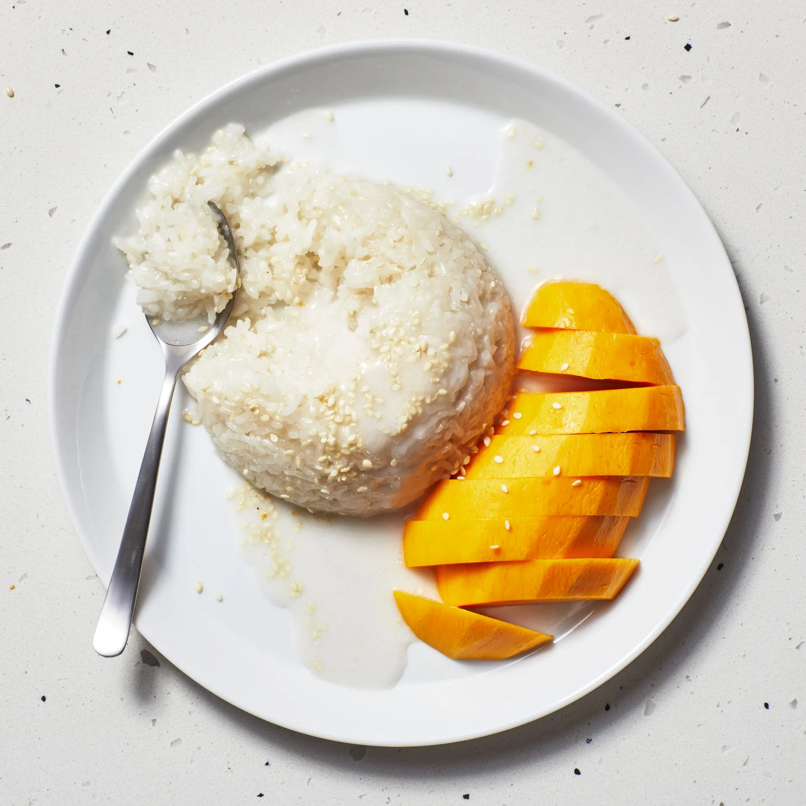

Thai Food
Sticky Rice With Mango
The classic combination of coconut milk, sticky rice, and sweet ripe mango has been a popular Thai dessert for centuries.
In the U.S. most people know of mango sticky rice (or khao niaow ma muang) from going to Thai restaurants, but this gluten-free treat is actually incredibly easy to make at home.

INGREDIENTS FOR STICKY RICE WITH MANGO (SERVES 6)
- 1½ cups glutinous (sweet) rice
- 1⅓ cups well-stirred canned unsweetened coconut milk
- ⅓ cup plus 3 tablespoons sugar
- ¼ teaspoon salt
- 1 tablespoon sesame seeds, toasted lightly
- 1 large mango, peeled, pitted, and cut into thin slices (at least 24)
HOW TO MAKE STICKY RICE WITH MANGO
- In a bowl wash rice well in several changes of cold water until water is clear.
Soak rice in cold water to cover overnight.
- Drain rice well in a sieve. Set sieve over a large deep saucepan of simmering water (sieve should not touch water) and steam rice, covered with a kitchen towel and a lid, 30 to 40 minutes, or until tender (check water level in pan occasionally, adding more water if necessary).
-
While rice is cooking, in a small saucepan bring 1 cup coconut milk to a boil with ⅓ cup sugar and salt, stirring until sugar is dissolved, and remove from heat. Keep mixture warm.
-
Transfer cooked rice to a bowl and stir in coconut-milk mixture. Let rice stand, covered, 30 minutes, or until coconut-milk mixture is absorbed. Rice may be prepared up to this point 2 hours ahead and kept covered at room temperature.
-
While rice is standing, in cleaned small pan slowly boil remaining ⅓ cup coconut milk with remaining 3 tablespoons sugar, stirring occasionally, 1 minute. Transfer sauce to a small bowl and chill until cool and thickened slightly.
-
To serve, mold ¼ cup servings of sticky rice on dessert plates. Drizzle desserts with sauce and sprinkle with sesame seeds. Divide mango slices among plates.